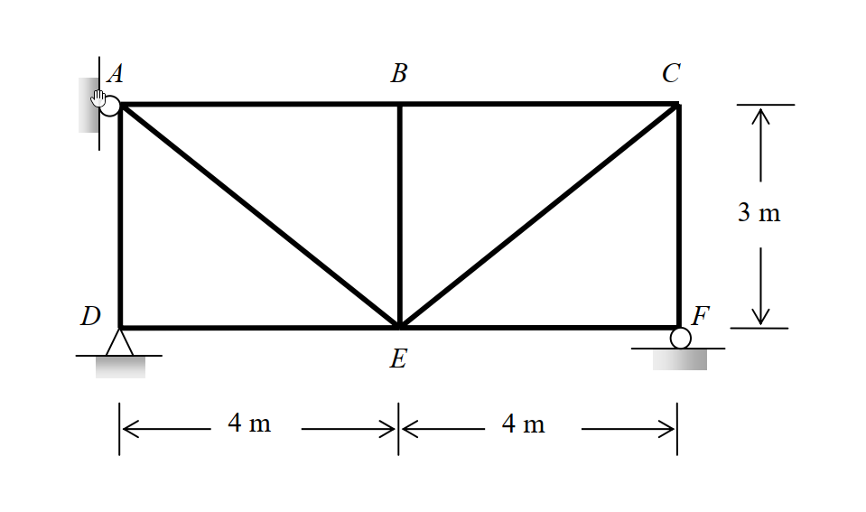

考題編號：SA-2011-1
主分類： SA-U2-2 靜不定結構分析
副分類： SA-U2-3
分析法： 柔度法 / 虛功法 (Method of Consistent Deformations / Virtual Work Method)
標籤： 靜不定桁架 溫度變化 製造誤差 支承位移
1. 原始題目重述 (Problem Restatement)
如圖所示之桁架結構，假設 AB 及 BE 桿件溫度增加 $60^\circ\text{C}$，DE 及 EF 桿件施作時分別短了 $1.5\text{ cm}$ 及 $1.0\text{ cm}$，支承 A 被建造於原定位置的左方 $2.4\text{ cm}$，且支承 F 低於原既定位置 $1.2\text{ cm}$。已知溫度膨脹係數 $\alpha = 1.08 \times 10^{-5} / ^\circ\text{C}$，假設各桿件之彈性模數 $E$ 值與斷面積 $A$ 值皆為常數，且 $EA = 8 \times 10^4\text{ kN}$。試計算各支承之反力。(25 分)

圖說：靜不定桁架，D點為鉸支承，F點為滾支承，A點原本有水平束制，各桿件長度可由座標推算
2. 考題核心精神與出題者意圖 (Core Concepts & Examiner's Intent)
本題為經典的一次靜不定桁架綜合題，測驗考生處理「多重非載重變形」（溫度應變、製造誤差、支承位移）的整合能力。出題者的核心意圖包含：
- 柔度法（相容變形法）與虛功原理的熟練度：在無外力作用下，如何運用多餘力作為贅力，寫出位移諧合方程式。
- 虛功方程式的正負號嚴格判定：尤其是支承位移作功時，虛反力方向與實際位移方向的內積。
- 零桿 (Zero-force members) 的辨識與應用：在虛力系統中快速找出零桿以減少運算量。
3. 解題戰略地圖與陷阱分析 (Strategic Roadmap & Trap Analysis)
戰略地圖：
- 判定靜不定度：計算得知本題為一次靜不定桁架。
- 選擇基本靜定結構：移除 A 點之水平拘束，以 A 點水平反力 $A_x$ 作為贅力 $X$。
- 建立虛力系統：於 A 點施加向右之單位力 $X=1$，求解所有虛反力與虛內力 $u_i$。
- 計算各桿實際初始變形量：將溫度變化、製造誤差轉化為 $\Delta L_{0i}$，同時確認支承位移 $\Delta$ 的實際方向。
- 代入虛功方程式：利用 $\sum W_{\text{ext}} = \sum W_{\text{int}}$，求解 $X$ 後代回求所有支承反力。
陷阱分析：
- ⚠ 陷阱 1：支承沉陷的虛功正負號
- 策略：當 $X=1$ (向右) 施加於 A 點時，F 點的虛反力為向上；而真實支承 F 是向下沉陷，故外部虛功 $W_{\text{ext}}$ 必須是負值。這是最容易出錯的地方！
- ⚠ 陷阱 2：零桿的干擾（煙霧彈）
- 策略：在 $X=1$ 的系統中，BE 桿與 EF 桿的虛內力 $u_i=0$。因此這兩根桿件的溫度變化或製造誤差不會對虛功方程式產生任何貢獻。考官給出 BE 與 EF 的數據是為了測試考生是否盲目計算。
- ⚠ 陷阱 3：單位的統一性
- 策略：題目給的 $EA$ 單位為 $\text{kN}$，變形量與製造誤差有 $\text{cm}$ 也有 $\text{m}$。強烈建議在代入虛功方程式前，全面統一為 $\text{kN}$ 與 $\text{m}$ 系統。
3.5 變數層次分析 (Variable Hierarchy Analysis)
最終目標
求出桁架各支承之真實反力（考慮溫度變化、製造誤差及支承位移）。
本題關鍵公式（依計算順序）
-
虛功方程式：$\sum W_{\text{ext}} = \sum W_{\text{int}}$
$$1 \cdot \Delta_A + F_{uy} \cdot \Delta_{Fy} = \sum u_i (\Delta L_{0i}) + \sum \frac{u_i^2 L_i}{EA} \cdot X$$ -
初始變形量（溫度與誤差）：
$$\Delta L_{0i} = \alpha \cdot \Delta T \cdot L_i + \Delta_{\text{error}}$$ -
真實反力計算：
$$R_i = r_i \cdot \boxed{X}$$
L1：題目直接給定
- 符號 ∣ 數值 ∣ 說明
- $\alpha$ ∣ $1.08 \times 10^{-5} / ^\circ\text{C}$ ∣ 溫度膨脹係數
- $EA$ ∣ $8 \times 10^4\text{ kN}$ ∣ 桿件軸向剛度
- $\Delta T$ ∣ $+60^\circ\text{C}$ ∣ AB 及 BE 桿溫度變化
- $\Delta_{\text{error}, DE}$ ∣ $-1.5\text{ cm}$ ∣ DE 桿施作誤差短少
- $\Delta_{\text{error}, EF}$ ∣ $-1.0\text{ cm}$ ∣ EF 桿施作誤差短少
- $\Delta_{Ax}$ ∣ $-2.4\text{ cm}$ ∣ A 點支承位移（向左，若向右為正）
- $\Delta_{Fy}$ ∣ $-1.2\text{ cm}$ ∣ F 點支承位移（向下，若向上為正）
L2：需知識點推導
虛力系統分析
- 符號 ∣ 公式／來源 ∣ 卡關?
- $u_i$ ∣ $\sum F_x=0, \sum F_y=0$ (節點法) ∣
- $F_{uy}$ ∣ $\sum M=0$ (整體平衡) ∣
變形量與虛功計算
- 符號 ∣ 公式／來源 ∣ 卡關?
- $\Delta L_{0i}$ ∣ $\alpha \Delta T L_i + \Delta_{\text{error}}$ ∣
- $f_{11}$ ∣ $\sum \frac{u_i^2 L_i}{EA}$ ∣
- $W_{\text{ext}}$ ∣ $1 \cdot \Delta_{Ax} + F_{uy} \cdot \Delta_{Fy}$ ∣
L3：深層知識（不懂就卡住）
- 知識點 ∣ 說明 ∣ 卡關?
- 零桿判定 ∣ 虛力系統中 $u_i=0$ 的桿件，其初始變形對虛功方程式無貢獻 ∣
- 外部虛功正負號 ∣ 虛反力與真實位移方向相反時，功為負值 ∣
4. 步驟化詳細計算過程 (Step-by-Step Detailed Calculation)
Step 1：定義基本靜定結構與虛力系統
策略註解：選擇 A 點水平拘束作為贅力 $X$（假設向右為正），移除該拘束後結構變為靜定，此為「基本靜定結構」。接著施加虛力 $X=1$ 於 A 點（向右）。
- 虛反力求取：
- 取 D 點力矩平衡：$\sum M_D = 1 \times 3\text{ (順時針)} - F_{uy} \times 8\text{ (逆時針)} = 0 \Rightarrow F_{uy} = \frac{3}{8}$ (向上)
- 垂直平衡：$\sum F_y = 0 \Rightarrow D_{uy} + F_{uy} = 0 \Rightarrow D_{uy} = -\frac{3}{8}$ (向下)
-
水平平衡：$\sum F_x = 0 \Rightarrow 1 + D_{ux} = 0 \Rightarrow D_{ux} = -1$ (向左)
-
虛內力 $u_i$ 求取 (利用節點法)：
- 節點 F：$\sum F_x = 0 \Rightarrow u_{EF} = 0$；$\sum F_y = 0 \Rightarrow u_{CF} + \frac{3}{8} = 0 \Rightarrow u_{CF} = -\frac{3}{8}$。
- 節點 C：$\sum F_y = 0 \Rightarrow -u_{CF} - u_{CE}(\frac{3}{5}) = 0 \Rightarrow u_{CE} = \frac{3/8}{3/5} = \frac{5}{8}$；$\sum F_x = 0 \Rightarrow -u_{BC} - u_{CE}(\frac{4}{5}) = 0 \Rightarrow u_{BC} = -\frac{1}{2}$。
- 節點 B：$\sum F_y = 0 \Rightarrow u_{BE} = 0$；$\sum F_x = 0 \Rightarrow -u_{AB} + u_{BC} = 0 \Rightarrow u_{AB} = -\frac{1}{2}$。
- 節點 A：$\sum F_x = 0 \Rightarrow 1 + u_{AB} + u_{AE}(\frac{4}{5}) = 0 \Rightarrow 0.5 + 0.8 u_{AE} = 0 \Rightarrow u_{AE} = -\frac{5}{8}$；$\sum F_y = 0 \Rightarrow -u_{AD} - u_{AE}(\frac{3}{5}) = 0 \Rightarrow u_{AD} = \frac{3}{8}$。
- 節點 D：$\sum F_x = 0 \Rightarrow -1 + u_{DE} = 0 \Rightarrow u_{DE} = 1$。
Step 2：計算初始實際變形量 $\Delta L_{0i}$ 與外部位移
策略註解：統一將長度單位轉換為公尺 (m) 以便與 $EA$ 單位對齊。
- 溫度變化：
- $\Delta L_{0, AB} = \alpha \cdot \Delta T \cdot L_{AB} = (1.08 \times 10^{-5}) \times 60 \times 4 = 0.002592\text{ m}$
- $\Delta L_{0, BE} = \alpha \cdot \Delta T \cdot L_{BE} = (1.08 \times 10^{-5}) \times 60 \times 3 = 0.001944\text{ m}$
- 製造誤差：
- $\Delta L_{0, DE} = -1.5\text{ cm} = -0.015\text{ m}$
- $\Delta L_{0, EF} = -1.0\text{ cm} = -0.010\text{ m}$
- 已知支承位移：
- A 向左建 $2.4\text{ cm}$：$\Delta A_x = -0.024\text{ m}$
- F 沉陷 $1.2\text{ cm}$：$\Delta F_y = -0.012\text{ m}$
- D 為固定基準：$\Delta D_x = 0, \Delta D_y = 0$
Step 3：應用虛功方程式
虛功方程式：$\sum W_{\text{ext}} = \sum W_{\text{int}}$
$$ \sum (P_{\text{virt}} \cdot \Delta_{\text{real}}) = \sum u_i \Delta L_{\text{real}} = \sum u_i \left( \Delta L_{0i} + \frac{u_i X L_i}{EA} \right) $$
1. 計算外部虛功 $W_{\text{ext}}$：
$W_{\text{ext}} = 1 \cdot (\Delta A_x) + F_{uy} \cdot (\Delta F_y) = 1 \cdot (-0.024) + \left(\frac{3}{8}\right) \cdot (-0.012) = -0.024 - 0.0045 = -0.0285\text{ m}$
2. 計算內部虛功的初始變形部分 $\sum u_i \Delta L_{0i}$：
- AB 桿：$(-0.5) \times 0.002592 = -0.001296\text{ m}$
- DE 桿：$(1.0) \times (-0.015) = -0.015\text{ m}$
- BE 與 EF 桿因 $u_i = 0$，無虛功貢獻。
總和：$-0.001296 - 0.015 = -0.016296\text{ m}$
3. 計算柔度係數 $f_{11}$ ($f_{11} = \sum \frac{u_i^2 L_i}{EA}$)：
$EA \cdot f_{11} = (-0.5)^2(4) + (-0.5)^2(4) + (1)^2(4) + (0)^2(4) + (0.375)^2(3) + (0)^2(3) + (-0.375)^2(3) + (-0.625)^2(5) + (0.625)^2(5)$
$EA \cdot f_{11} = 1 + 1 + 4 + 0 + \frac{27}{64} + 0 + \frac{27}{64} + \frac{125}{64} + \frac{125}{64} = 6 + \frac{304}{64} = 10.75\text{ m}$
$f_{11} = \frac{10.75}{80000} = 0.000134375\text{ m/kN}$
4. 求解贅力 $X$：
$-0.0285 = -0.016296 + 0.000134375 \cdot X$
$0.000134375 \cdot X = -0.0285 + 0.016296 = -0.012204$
$X = \frac{-0.012204}{0.000134375} = -90.82\text{ kN}$
這表示 A 點的真實水平反力為 $90.82\text{ kN}$，方向向左。
Step 4：求解所有真實支承反力
將贅力 $\boxed{X = -90.82\text{ kN}}$ 代回基本靜定結構的反力公式：
- A 點水平反力：$A_x = X = \boxed{-90.82\text{ kN}} \text{ (向左)}$
- F 點垂直反力：$F_y = \frac{3}{8} X = \frac{3}{8} (-90.82) = \boxed{-34.06\text{ kN}} \text{ (向下)}$
- D 點水平反力：$D_x = -X = -(-90.82) = \boxed{90.82\text{ kN}} \text{ (向右)}$
- D 點垂直反力：$D_y = -\frac{3}{8} X = \boxed{34.06\text{ kN}} \text{ (向上)}$
(靜力平衡驗算：$\sum F_x = -90.82 + 90.82 = 0$；$\sum F_y = 34.06 - 34.06 = 0$；$\sum M_D = A_x(3) + F_y(8) = (-90.82)(3) + (-34.0575)(8) = -272.46 + 272.46 = 0$，完全吻合！)
5. 關鍵爭議點與進階探討 (Critical Issues & Advanced Discussion)
- 無載重變形的零桿影響：在虛力系統分析時，有些桿件的虛內力為 0。當考題中這類桿件發生溫度變化或製造誤差時，它們的變形在結構整體的相容變位方程式中不作功，對贅力沒有貢獻。考生常在此處懷疑自己是否算錯。遇到這類干擾資訊，必須相信力學原理：不承載虛力的桿件，其自發變形對該多餘束制沒有影響。
- 支承位移與虛反力方向：在計算外部虛功 $W_{\text{ext}}$ 時，必須嚴格遵守 $P_{\text{virt}} \cdot \Delta_{\text{real}}$ 的內積關係。許多考生習慣只看數值，導致正負號錯亂。建議在圖上明確標出 $P_{\text{virt}}$ 向量與 $\Delta_{\text{real}}$ 向量，若同向則為正功，反向為負功，以此作為最終防線。